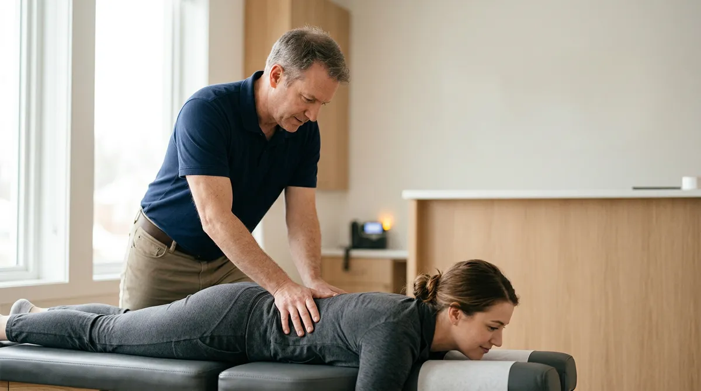

You cut no-shows at a chiropractic office by reminding patients before every visit, making it effortless to reschedule instead of ghost, and filling any gap the moment it opens. That is the short version. Industry estimates put the cost of no-shows and last-minute cancellations at $15,000 to $40,000 a year for the average clinic, and the empty slot is revenue you can never bill again. The good news is that the fixes are cheap and mostly mechanical: in one outpatient study, patients who got a text reminder were 38% less likely to miss their appointment. Here are eight ways to get there.
Chiropractic · Listicle
8 ways chiropractic offices can cut no-shows and keep the schedule full

$15K–$40K
a year lost to no-shows and last-minute cancellations at the average clinic, by common industry estimates
38%
less likely to miss an appointment after a text reminder, in a BMC Ophthalmology outpatient study
24–48 hrs
out from the visit for the main reminder, the window most reminder sequences are built around
01
Send a reminder before every single visit
The single biggest lever on no-shows is the reminder, and text works best. In an observational study published in BMC Ophthalmology, patients who received a text reminder were 38% less likely to miss their appointment. That was an eye clinic rather than a chiropractic office, but the mechanism is the same: people forget, and a text at the right moment fixes it. The strongest cadence is not one message, it is a sequence: a confirmation when the appointment is booked, a reminder 24 to 48 hours out, and a final nudge the morning of the visit. Chiropractic care is built on frequent repeat visits, so a patient with three appointments this week needs a reminder for each. Skip the reminders and you are relying on memory, which is the least reliable scheduling tool there is.
02
Book the next visit before the patient walks out
A patient standing at your desk after an adjustment is the easiest booking you will ever get. A patient you have to chase down by phone next week is one of the hardest. Scheduling the next visit before someone leaves the clinic sharply increases the odds they actually come back, because the appointment is already real and already on their calendar. Every visit that ends with “just call us when you want to come back” is a visit you will probably lose. Book it while they are in front of you.
03
Make rescheduling as easy as not showing up
Most no-shows are not patients who decided to skip care. They are patients whose day fell apart, who could not reach you to move the time, so they just did not come. If the only way to reschedule is to call during business hours and hope someone answers, you have made ghosting easier than rescheduling. When a patient can reach a live answer any time, day or night, and move their appointment in 30 seconds, a no-show becomes a reschedule. The visit stays in your week instead of vanishing from it.
04
Answer the phone while you are adjusting patients
Here is the structural trap in most chiropractic offices: the front desk is busiest with patients at exactly the times the phone rings most, and the person at the counter cannot check in a patient, verify insurance, and answer a ringing line at once. So the line loses. A patient calling to confirm, reschedule, or move a time hits voicemail, gives up, and becomes a no-show you could have prevented. The calls that keep your schedule intact are landing during the hours you are least able to pick them up.
05
Fill the cancellation the moment it opens
When a patient cancels a 2 p.m. on Thursday, that slot is worth nothing sitting empty. It is only worth something if you fill it fast. The clinics that keep their schedules full have a way to instantly reach into their waitlist or reach the next patient due for care and offer that open time before the day passes. Doing this by hand means someone has to notice the cancellation, stop what they are doing, and start calling around, which rarely happens during a busy clinic day. Automating the fill turns a dead slot back into a billed visit.
06
Chase the no-show the same day, not next month
A patient who misses a visit and hears nothing back assumes it was no big deal, and their care quietly lapses. A patient who gets a warm, prompt “we missed you today, let's get you rebooked” often comes right back in. The window matters. Reaching out the same day, while the missed visit is still fresh, recovers far more patients than a note that goes out a week later. Every recovered no-show is not one visit, it is a treatment plan that stays on track and keeps generating visits for months.
07
Give Spanish-speaking patients a line they can actually use
In many US markets a real share of your patients speak Spanish at home. If they can only confirm, reschedule, or ask a question when one specific bilingual team member is at the desk, then a lot of them simply will not call, and a patient who cannot easily reach you is a patient who no-shows. A phone line that answers in both English and Spanish, on the same number and at any hour, keeps those patients confirmed and in your chairs instead of dropping out of care because of a language wall.
08
Stop trying to fix a 24-hour problem with 9-to-5 staff
No-shows are driven by things that happen outside your office hours: a patient remembers at 9 p.m. that they need to move tomorrow's visit, or a work shift changes over the weekend. If your phone only answers during clinic hours, all of that turns into missed appointments by default. You cannot staff a front desk around the clock, and you should not have to. This is where Sol fits. Sol is a bilingual AI receptionist that answers every call in English or Spanish, 24/7, confirms and reschedules appointments, and books straight onto your calendar. It picks up when your front desk is with a patient, when everyone is on another line, and at 9 p.m. when someone needs to move tomorrow's adjustment. Sol backs up your team, it does not replace them, so your front desk can focus on the patient in the chair instead of a ringing phone.
The schedule you already have is worth protecting
You do not need more new patients to grow. You need the appointments already on your calendar to actually happen, and the gaps that open to get filled fast. Remind every visit, make rescheduling effortless, answer every call, and fill every cancellation, and the no-shows quietly draining your week turn back into billed care.
Want to see how many no-shows Sol would have saved your clinic last week?
Sol answers every call in English or Spanish, 24/7, confirms and reschedules appointments, and books straight onto your calendar.
Book a callCommon questions
How much do no-shows cost a chiropractic clinic?
Industry estimates put it at $15,000 to $40,000 a year in lost revenue for the average clinic, though nobody publishes a hard chiropractic-specific number. Because chiropractic care runs on repeat visits, a single no-show often signals a treatment plan slipping off track, which multiplies the loss over the following weeks.
What actually reduces chiropractic no-shows the most?
Automated appointment reminders are the biggest lever. In an observational study published in BMC Ophthalmology, patients who received a text reminder were 38% less likely to miss their appointment. The strongest approach is a sequence rather than one message: a confirmation at booking, a reminder 24 to 48 hours out, and a final nudge the morning of the visit.
How do you fill a last-minute cancellation?
Speed is everything. An open slot only holds value if you fill it the same day, by reaching into a waitlist or contacting the next patient due for care and offering the time. Doing this automatically the moment a cancellation lands recovers far more slots than waiting for a staff member to notice and start calling around.
Can an AI receptionist reschedule appointments for patients?
Yes. Sol answers the call in English or Spanish, confirms who the patient is, and reschedules or books the appointment straight onto the clinic's calendar during the same call, at any hour. That means a patient who needs to move a visit at 9 p.m. reschedules instead of becoming tomorrow's no-show.
Will an AI receptionist replace my front desk staff?
No. Sol backs up the team rather than replacing it. It covers the calls that come in while the front desk is with a patient, when everyone is already on the line, and after hours, so your staff can focus on the person in the chair instead of chasing a ringing phone.